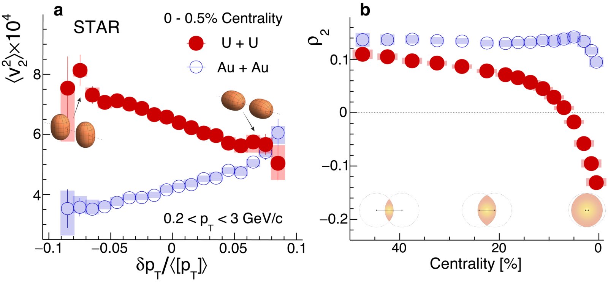
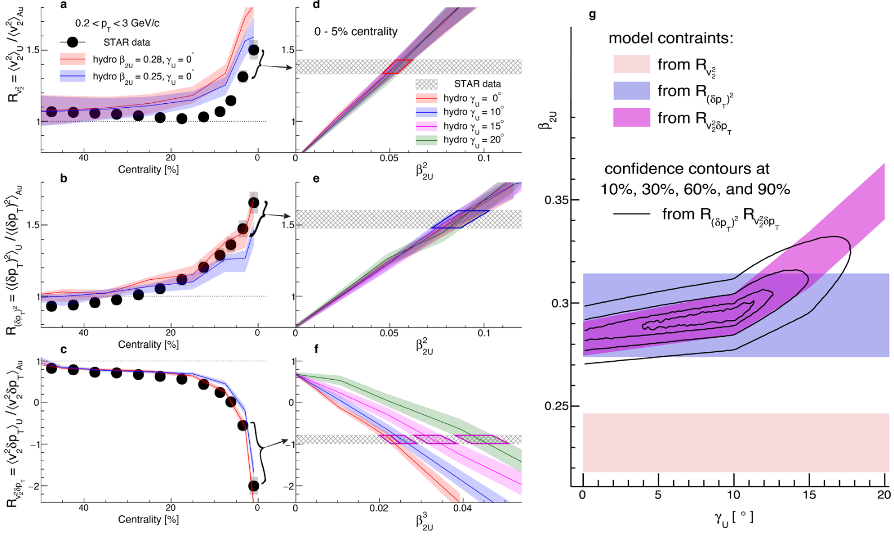
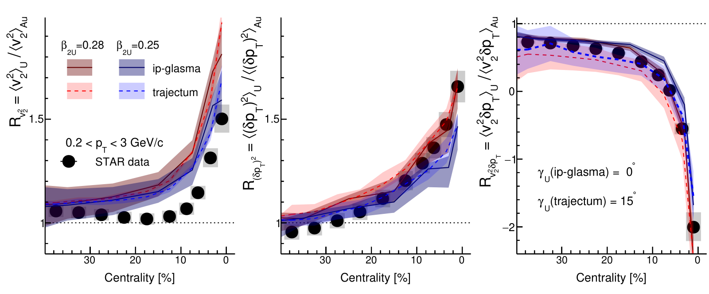

Taking a snapshot of a nucleus's shape by smashing it
Imaging shapes of atomic nuclei in high-energy nuclear collisions
STAR Collaboration, Nature 635, 67–72 (2024)
My role: ran the Trajectum hydrodynamic simulations used to extract the deformation of uranium; part of the paper-writing team.
In one paragraph
Most atomic nuclei are not round. We showed that smashing them together at nearly the speed of light takes an instant snapshot of their shape, which the exploding quark-gluon plasma then imprints on the outgoing particles. Comparing uranium and gold collisions at RHIC, we measured uranium's elongation and its small deviation from a perfect cigar shape, the first such ground-state measurement made without using excited states.
1The gap: nuclear shapes are hard to see directly
Nuclei come in different shapes. Uranium-238 is stretched like a cigar; gold-197 is nearly round. The shape is described by two numbers: how deformed the nucleus is (β₂) and how much its three axes differ (γ, the "triaxiality").
Low-energy experiments infer shapes indirectly. A deformed nucleus tumbles quantum-mechanically on a timescale of 10³–10⁴ fm/c (1 fm/c = 3 × 10⁻²⁴ s), and slow measurements average over all orientations.
2What we measure: how the plasma's flow remembers the collision shape
We focus on head-on collisions. Two uranium nuclei can meet body-to-body or tip-to-tip. The overlap region sets the shape and size of the quark-gluon plasma, and its expansion turns that geometry into the angles and momenta of the particles we detect.
So in uranium collisions, events with large v₂ should have small [pT], and vice versa. We measure three event-by-event quantities: the size of v₂ (⟨v₂²⟩), the spread of [pT] (its variance), and their correlation (⟨v₂² δpT⟩). The first two grow with β₂²; the correlation depends on β₂³ cos 3γ, which makes it sensitive to triaxiality.
3What we observe: uranium behaves very differently from gold

In the most central 0.5% of collisions, uranium shows a clear anticorrelation: events with low [pT] (enriched in body-body collisions) have twice the ⟨v₂²⟩ of gold. In gold the trend goes the other way.

To remove the poorly known properties of the plasma, we divide each U+U observable by the same one in Au+Au. The two nuclei differ in mass by only 20%, so the fluid effects almost cancel and the ratio mainly reflects the shapes.

As a cross-check with a different hydrodynamic model, we repeated the comparison with Trajectum, whose parameters come from a Bayesian fit to LHC data. It gives β₂ = 0.275 ± 0.017 and γ = 15.5° ± 7.8°.

4What we conclude: uranium is a cigar, with a slight twist
Combining both models gives β₂ = 0.286 ± 0.025 and γ = 8.7° ± 4.5° for uranium-238. The deformation agrees with low-energy data (β₂ = 0.287 ± 0.007), and the small γ rules out large triaxiality, consistent with low-energy estimates of 6–8°.
5What comes next
- Isobar pairs: collide nuclei with the same mass number to measure small shape differences precisely.
- Neutrinoless double-beta decay: better shapes of the parent and daughter isobars could reduce uncertainties in the nuclear matrix elements.
- Odd-mass nuclei and rarer shapes: the method works equally for odd-mass nuclei, and higher flow harmonics can probe octupole and hexadecapole deformations.
- Soft nuclei: multi-particle correlations such as ⟨v₂⁶⟩ can separate a fixed shape from shape fluctuations.
- Better QGP measurements: comparing structurally different nuclei isolates the initial conditions, sharpening extractions of the plasma's transport properties.
All plots on this page are reproduced from that paper under CC BY 4.0. Animations are simplified illustrations made for this page, not results of the paper.